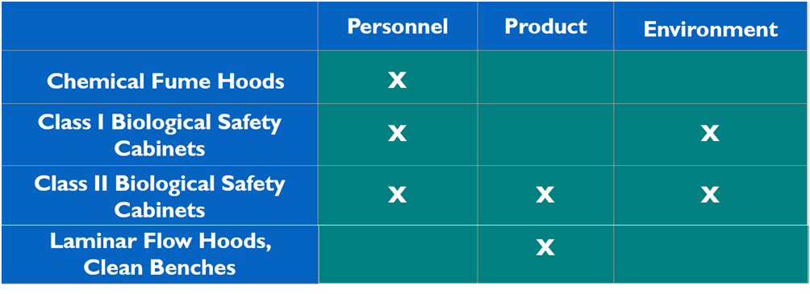
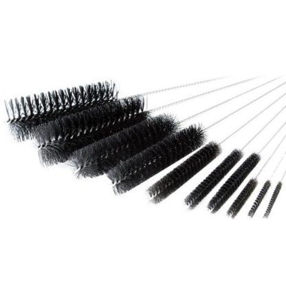
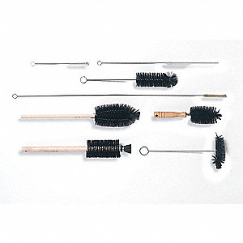
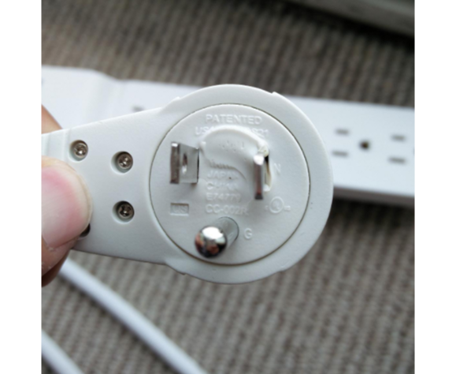
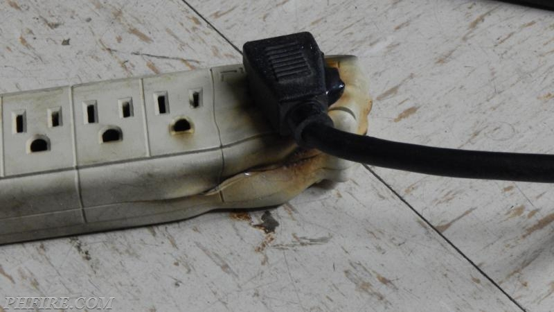

Equipment Usage and Safety
General Equipment Safety
Scientific environments often carry risk that is unforeseeable as the nature of the work is to test or try things that have never been done before. Often this type of work requires processes using high energy such as mechanical, sonic, electrical, electromagnetic, high stress, and high or low temperatures. These conditions can combine to increase the potential harm that can come from equipment failure.
We suggest checking equipment safety features, tolerances, and guidelines when assessing risk. We also suggest multiple methods and failsafes to prevent accidents and to limit harm if failures do indeed occur.
Specific Concerns for Typical Lab Equipment
We recommend having manuals for all of your lab equipment readily available to users of the lab and providing training for the first time use of any lab equipment. Below are some typical safety issues that one should be aware of when using common lab equipment.
Autoclaves: Autoclaves use very high pressure and temperature. Appropriate PPE should be worn when operating an autoclave. The door gasket (seal) should be checked for cracks, and the drain screen should be free of debris. Ensure the door is closed properly before starting a run, and never attempt to open an autoclave door during a run. For more information on autoclaving practices and how to test and verify an autoclave from the CDC, see here and here. We recommend that all users are trained, that autoclaves are regularly inspected and serviced by a professional and that the lab has a plan in place for validation of effective functioning and biological inactivation. Note that in some countries (such as the UK) autoclaves fall under pressure vessel regulations and there are legal requirements regarding insurance and inspections.
Anaerobic chambers: Anaerobic chambers operate under pressure so the major failure points are seals leaking, failure of the pressure regulator on the CO2 tank or chamber, or pressure sensor failure. Failures could lead to breaches of containments and unintended exposure of the user to the organism they are using. We recommend that all users are trained and that anaerobic chambers are regularly inspected and serviced by a professional.
Bioreactors/ fermenters*: Thetemperature control and electrical and fluidic connections can all fail leading to electrical or biological hazards. Connections for pressure regulators and pumps could also cause an issue. The main risk here is that a spill of biological material could be much larger from a bioreactor than from a dropped flask or other incident. Build your biological spill plan (See Chapter 13) bearing in mind the largest volume that will be cultured in the lab.
Biosafety cabinets (BSCs) and laminar flow cabinets: Clogged or ineffective filters and contaminated casing or pan can all cause contamination of your biological materials and potential exposure of users. Air pressure failures and poor working practice can also cause issues. As BSCs are one of the larger and heavier items of lab equipment, we recommend that you consider installing a sash counter weight and a stable base to ensure that the BSC is properly seated and secured to the wall. See the Hood section below for more details. We recommend that all users are trained and that BSCs are regularly inspected and serviced by a professional.
Centrifuges : One of the biggest problems with centrifuges is an unbalanced rotor, which can loosen and put strain on the spindle. With time this can cause the centrifuge to start moving unstably while spinning—in the worst cases, it can move across the work surface and potentially fall off. Eventually the spindle can shear. This will irreparably damage the equipment and in larger, high-speed centrifuges can also cause damage to surrounding areas and injure people. Always ensure that samples are placed properly balanced within the centrifuge before a run. Other issues to pay attention to include: spindle cracks or chips, unclean rotors, loose particles in the chamber, lid fitting on the rotor securely, speed sensor, and brake working properly. Your biological spill plan (see Chapter 13 - ) should cover what to do if a centrifuge or the samples inside it break. We recommend that all users are trained and that centrifuges are inspected and serviced by a professional if they show any signs of wear or damage and ideally preventatively serviced on a regular basis.
Chemical fume hoods: It is very important that fume hoods are operating effectively to protect the user and lab from exposure to hazardous chemicals. You should check that the blower is exhausting properly and is able to pull the proper pressure at the indicated sash height. Also, you should check that all the mechanical parts of the cabinet are functional, e.g., the vents in the rear are opening and closing, sash counter weight is moving smoothly, and the sash is able to close. You should also ensure users are able to close all ports, gas, vacuum, and air water lines coming into the hood. We recommend that all users are trained and that fume hoods are regularly inspected and serviced by a professional.
Flow cytometers : Common problems are leaks, electrical shorts, and puddling fluids. As the device contains powerful lasers, you should also have laser power safety shields and ensure that the laser power and shutters are working. Your biological spill plan (see Chapter 13 - Biological Safety) should cover what to do if a spill occurs inside or on the flow cytometer.
Freezers : Issues include condenser pans leaking on electronics, unleveled units which are at risk of tipping over, and compressors overheating. Freezer failures can also be devastating and very expensive for projects and members, damaging precious samples and reagents. Fit freezer alarms if possible and ensure members are in the habit of checking freezer function and looking out for telltale signs of water on the floor. There are many commercial options and also many DIY designs out there using Arduino or Raspberry Pi (e.g., here and here) that your members might be able to construct. Use of ultralow temperature freezers (-80°C) and cryogen equipment brings its own safety issues and users should be provided with appropriate PPE to avoid cryogenic burns (see Chapter 6).
Gel electrophoresis: The main issue with gel electrophoresis is that it operates at a high voltage and requires protection measures to avoid exposing the user to unprotected terminals or exposed wiring or the buffer while the gel is running. The shock is likely to be painful and for someone with a heart condition it could cause worse problems. Always check for leakages or spilled buffer, frayed wiring, or exposed contacts. Ensure that the equipment is labeled as high voltage and immediately taken out of service if anything is broken.
Glassware/distillation columns: Glassware can have sharp edges causing risks of injury, brittle connections causing failures and cracks, and seal leaks, resulting in chemical or biological contamination. Ensure that members are aware to check the glassware they are using and know what to do with any that is chipped or broken.
Glove boxes: Breaches of containment and exposure of users to the biological material being manipulated is the most significant safety hazard. This can be due to failure of seals, air leaks (you can check with soapy water bubbles = leak), and brittle plastic. We recommend that all users are trained and that glove boxes are regularly inspected and serviced by a professional.
Heat blocks: These can have temperature regulator problems and electrical problems as well as providing a hot surface with risk of burns. Ensure there is a thermometer available to check against the reported temperature and do not allow overnight use.
Microscopes (with or without lasers): The most common issue in all microscopes is electrical problems and hot surfaces where dust can accumulate causing a fire risk. Many also have moving stages resulting in mechanical pinch points where users can trap fingers and use of glass slides can sharp edges. Fluorescent microscopes also result in laser safety problems. We recommend that all users of microscopes with lasers are trained.
Microwaves: Microwaves run at a high voltage and produce microwave radiation so proper shielding is important. Make sure that the shielding on the door is intact and the safety interlock is functioning correctly—he microwave should not run with the door open.
PCR machines: Thermocyclers get hot and also sometimes have electrical problems. Some additionally have heads that slide on and off the device and lids that can be tightened on top of tubes, resulting in mechanical pinch points that could cause injury.
Pipettes : Pipettes should be regularly calibrated and cleaned. Improper use can lead to contamination and occasionally lead to failed experiments. Pipettes, especially with a tip on, can be sharp, and should be used with care.
Sonicators and blenders: Sonicators create a very loud ultra sound noise which requires ear protection for users and those in surrounding areas during use. This means that they should ideally be located in a separate room with a sign to prevent people entering without ear protection while the device is on. Alternatively, all users of the lab should be provided with hearing protection. Blenders specifically can have sharp blades and moving parts that can cause injury.
Sterilizers, steam-pressurized vessels : This equipment is a heat source and hot surfaces should be labeled to alert users. Emergency valves should be fitted and functional to avoid over-pressure operation and the rapid release of steam and pressure that could damage the equipment and injure users. All users should be trained and provided with appropriate PPE to avoid scalds or burns.
Stomachers: Mechanical pinch points/sharp edges, electrical safety.
Soldering iron : Soldering irons are very hot—usually around 350°C. Hot objects are a fire risk so ensure that good quality holders for soldering irons are provided and that people know to check they have switched off the iron before they leave. You can add timers to solder iron plugs to avoid issues with them accidentally being left on. Avoid using lead-based solder, especially when working with kids! Electrical safety is also important and users should look out for frayed cords.
UV transilluminator : UV light can be hazardous to the skin and eye. Never use a transilluminator without the proper protective panel or face and arm protection.The electrical connections need to be sealed from wet conditions such as electrophoresis buffer dripping from gels.
Pumps and vacuums: Electrical problems, mechanical pinch points/sharp edges, high pressure or safety, compressed gas or high vacuum explosion.
In Depth: Hoods
Many labs have hoods such as biosafety cabinets, laminar flow hoods, or chemical fume hoods. Understanding how each of them is different, what they do/don't protect against, and how to safely use them is very important. More information on the safe use of chemical fume hoods can be found here; and more info on biological safety cabinets can be found in Appendix A of the BMBL. Figure Source: Biological Safety Cabinets "A Web-based Training Program" Eagleson Institute www.eagleson.org
Laminar Flow Hood/Clean Bench
- Personnel protection: No (outward airflow into operator's breathing zone)
- Product protection: Yes (laminar, HEPA-filtered airflow)
- Environment protection: No (no filtration of exhaust air)
- Used primarily with nonhazardous materials (e.g., preparing sterile media, pouring agar plates)
Chemical Fume Hoods
- Personnel protection: Yes (inward airflow through sash opening)
- Product protection: No (draws contaminants in the laboratory air directly over the work surface)
- Environment protection: No (typically no HEPA filtration of exhaust air)
- Used primarily for work with large quantities of volatile chemicals
- Containment barrier powered by external blower (typically no on/off switch, connected to HVAC)
Class I (Micro) Biological Safety Cabinet
- Personnel protection: Yes (inward airflow through sash opening)
- Product protection: No (draws contaminants in the laboratory air directly over the work surface)
- Environment protection: Yes (HEPA filtration of exhaust air)
- Used primarily with low-risk biohazardous materials, but not cell cultures
- Containment barrier may be powered by internal or external blower
Class II Biological Safety Cabinets
- Personnel protection: Yes (inward airflow through sash opening)
- Product protection: Yes (downward HEPA-filtered airflow over the work surface, inflow captured by front grille)
- Environment protection: Yes (HEPA filtration of exhaust air)
- Used primarily with high-risk biohazards and cell cultures
- Can discharge to room or building exhaust
Electrical Safety
Electrical safety is a major concern with any piece of equipment. All equipment should be properly grounded and fused. All devices need to pass electrical tests and standards to be commercially sold. We recommend continuing to maintain these standards in repairs or upgrades.
Electrical protections (e.g., ground fault circuit interrupter and breaker fuses) should meet local building codes. This insures that the equipment will not become more dangerous nor will the connection to the equipment become a safety issue during operation. This will protect yourself and others during a power spike or accident.
Risks in Acquiring Used Equipment and Donations
When acquiring equipment there can be inherent problems that go above and beyond "does it work". Listed below are some of the common problems.
- Form : The form of the material can have micro cracks, chips, or stress fractures, e.g., a stressed spindle in a centrifuge.
- Function : Because scientific equipment is precision engineered, slight changes in the function could cause dangerous conditions, e.g., unbalanced rotors on centrifuges, motor controls, safety relief valves, fuses.
- Materials : Compatible materials could cause issues with, UV or chemical damage, aging could affect the useable lifetime.
- Strength : ging and wear and tear can affect the strength of materials resulting in failures.
- Contamination : chemical or biological materials could be inside the equipment that requires clean up. Chemicals could react with residue on the equipment that could result in fumes. Furthermore, donated equipment could contain radioactive materials that have not been mitigated.
Here is an example of risks that might not be apparent. During one of BioCurious's community projects, we were testing a light source and it had not been used in a long time. Dust had settled on the bulb when we turned it on. It started to burn off the dust which caused a little alarm because we didn't know what was burning.
Another common example of risk is glassware that is unwashed. These could contain toxic chemicals, or trace amounts that could react with the growth of cultures. Worse yet chemical residue can cause reactions to take place that could produce toxic gases or fires (this has happened at many labs). Furthermore, if the donation was involved in bacterial growth from a BSL-2 lab due to unsterilized glassware. Phage residue has been known to contaminate a lab, which has caused reproducibility issues, inconsistent growth, or cultures crashing for "no explainable cause." I cannot emphasize enough how difficult it is to get rid of a phage infection once it takes hold.
Some Countries Require a License for Specific Pieces of Equipment
Check with your local laws to determine what specific equipment requires a permit. Equipment may require a permit if it is a high potential energy or uses chemicals that are controlled. For example, lasers, or equipment that contains radioactive materials, such as air ionizers, may also require a permit. Medical equipment is tightly regulated and research that could appear as treatment could bring heavy fines even if both parties consent. Export of equipment is also another area where you need a permit and to pay export tax. Even hand carrying personal equipment to other countries you intend to bring back can require federal oversight.
Decontamination of Used Equipment
In principle, it is the donor's responsibility to clean and decontaminate equipment they are providing, but in practice this often does not happen and community labs end up with equipment that requires decontamination. We always suggest asking what the equipment was used with and around and then doing your own decontamination based on the answers you obtain.
Typically, biological decontamination is performed with a compatible reagent like 10% bleach, 70% ethanol, or others such as commercial lab disinfectants. For chemical decontamination, usually water is used with paper towels. In every case, we recommend researching the agents the equipment was used with and finding the proper decontamination method. In both cases, place these in the proper disposal containers. See disinfection and their proper use in Working with Microbes and online guides to disinfection, e.g., Disinfection 101 from Iowa State University.
Decontaminating a Biosafety Cabinet
Occasionally, community biology labs inherit or buy used biosafety cabinets. It is very important that they be decontaminated before using and that the HEPA filter is checked to see if it is still functioning, particularly if you are unsure of the age or last date of service. If the filter gets too loaded, it will not allow sufficient airflow to maintain the containment barrier effectively.
See here for more info on how to surface decontaminate a cabinet. If you do need to check and replace the HEPA filter, you will need to hire a hood calibration and repair company who will decontaminate it prior to accessing the filter using fumigation with vaporized formaldehyde or hydrogen peroxide, with the latter being preferable as it is much safer.
Decontaminating Donated Glassware
Glassware is a great resource for reusable, durable, chemically resistant containers that can be heated and cooled—really the ideal container for so much of the community lab's needs. Having good clean glassware helps make working in the lab easier, cheaper, and less of a hassle. Dirty glassware is often the cause of big problems in many labs: trace detergents, trace minerals, or chemical residue can make experiments unpredictable and unreliable. Therefore, we cannot stress enough to make sure you are cleaning glassware correctly and often. As always, select the proper PPE necessary to wash the dishes and protect from sharp glass, use a hot water grip to deal with slippery glassware as well as lab coat and eye protection for splashes in the eyes or clothing.
Even new glassware should be thoroughly washed and rinsed. New glassware is slightly basic and should be treated in a 1% hydrocloric acid soak overnight to remove any residue from manufacturing. For any donated glassware, we recommend knowing what kind of work was being performed in the glassware and taking the appropriate steps to do a second decontamination of the glassware. We recommend insisting all donated glassware should be donated clean by the donor and a second cleaning done in the community lab before use. Donated glassware may also require an overnight bleach soak to decontaminate it. We do not recommend taking any heavily stained glassware or glassware with chemical residue on it.
Many labs have a soaking protocol for different types of purposes, e.g., 10% bleach soak to remove bacterial contamination or a weak acid soak to remove calcium carbonate from hard water. We recommend using brushes or sponges that can reach inside all areas of the glassware, be bent to reach around the edges of openings, and whose bristles will not scratch the container or degrade under mild acid or basic conditions. The method of cleaning should depend on the end use of the glassware. The choice of detergent will depend on your end use, but many general use detergents are available. These lab specific detergents are formulated to rinse cleanly off the glassware where many household soaps can leave a residue (which when exposed to acid can result in a thin film of grease). Heavy dirt, grit, or residue should be removed with a scraper. Bacterial pellets or lysis residue can be a source of contamination and should be scrubbed to make sure all of the greasy biofilm is removed prior to washing. For some chemicals, a solvent step might be necessary. Extra care should be taken if there is phage contamination, which is difficult to remove from a lab environment once it becomes contaminated. Depending on the purpose, washing can be done in tap water or filtered or treated water. A final triple rinse should be with the same quality of water you will be using in your experiments. Therefore, if you are making media with high-quality 18 OHM water, you should be triple rinsing with 18 OHM water as well. Depending on the purpose, after the final rinse glassware may be autoclaved with loose lids or foil coverings to make the container sterile for use. Often these are finished with a dry setting to evaporate any condensed steam in the container.
General Protocols for Washing Glassware
- Use the proper PPE for the washing task—gloves, lab coat, and eye protection.
- Fill the basin with warm water.
- Add the recommended amount of soap to the basin for the amount of water.
- Add any bleach or dilute acid for a soak.
- Dip the glassware in the wash basin.
- Scrub with brush inside and outside.
- Dip the glassware in the wash basin.
- Scrub with brush inside and outside.
- Rinse with water to remove soap.
- Triple rinse with final quality water (triple rinse is described as 1) rinsing the outside with water, filling to ⅓ height, swirling, and inverting so water touches every part of the inside; 2) rinsing the outside with water, filling to ⅓ height, swirling, and inverting so water touches every part of the inside; 3) rinsing the outside with water, filling to ⅓ height, swirling, and inverting so water touches every part of inside.
We do not recommend the use of chromic acid in cleaning. The use of chromic acid for most labs is not necessary, and this level of organic material under specific organic chemistry conditions might warrant this level of cleaning to avoid side reactions. The method is very corrosive. It removes the corrodes on the glass surface and removes markings on the glass. Several resources are available for more information. We do not recommend this method for the community lab as the chemicals are expensive, very corrosive, carcinogenic, and difficult to dispose of.
Recommended Materials and Methods of Cleaning
Glassware cleaning brushes (nonabrasive, synthetic bristles or foam)
 
Laboratory Soaps
Alconox®, Dural®,M&H®, Lux®, Tide® and Fab®
Cleaning Glassware Resources
- https://www.sigmaaldrich.com/technical-documents/articles/labware/cleaning-glassware.html
- https://barricklab.org/twiki/bin/view/Lab/GlasswareCleaning
- https://www.aceglass.com/dpro/attachment_kb.php?s=68dc806c878a3c6a6fb5e263367b58fd&id=122
- https://cdn.ymaws.com/phss.co.uk/resource/resmgr/files/Determination_of_the_cleanin.pdf
- https://www.corning.com/catalog/cls/documents/application-notes/CLS_AN_112_CleaningGlassware.pdf
Radiation Safety Evaluation for Incoming Equipment
Some community labs have been offered or received donated equipment that has been exposed to radioactive material. Sometimes the previous owner viewed donation as an easy way to off-load the costly and difficult task of arranging proper disposal because all the costs and risks are thus passed to the community lab. This is not a problem you want to have so take steps to mitigate the risk!
We recommend questioning donors about the previous use of the equipment and the type of lab it was used in. Do not accept donations of equipment that they confirm or you suspect has been exposed to radiation—watch out for radioactive warning labels and bear in mind that sometimes people peel them off. If you do end up with equipment in your lab about which you have concerns, it is impossible to detect radiation and confirm if there is an issue without a geiger counter. Contact someone with access to and experience in using a calibrated geiger counter to test the equipment. If it is radioactive, contact local specialist disposal contractors to establish how to get rid of it and anticipate that this could be expensive.
Making Your Own Equipment
Every piece of equipment once started as a prototype. As such, we encourage community lab members to make equipment. But doing so comes with risks both to the maker, users, and those around them. Commercial equipment has passed through many iterations to ensure safety. This is not the case with homemade equipment, and therefore additional precautions should be made.
Ask questions about your systems, and do a design review while building them. Discuss with people who know electronics, fluidics, and mechanical controllers; they will tell you the risks and help prevent disaster. There are many systems you can walk through to help in the design review process to identify the risks.
A design review goes through every system to determine the possible risks to failure. The most typical risks:
Common Risks in Making Your Own Equipment
- Fire: This includes hot surfaces, sparks, flammable gasses or liquids
- Sonic: Ultrasound, repeated exposure to loud sounds
- Spectral: This could be use of infrared or ultraviolet light as well as high-intensity light either solar or lasers
- Electrical: This includes high energy AC or DC but could be charged capacitors, live wires, or insulation on wires' terminal connections; frayed cords or plugs that do not fit the connections
- Mechanical: Mechanical risks could include pinch points, splinters, swinging arms, weight imbalance, mechanical parts breaking loose under stress, sharp edges/points, loose fittings, breaking parts trips, or falling equipment
- Cryogenic: Use of dry Ice, liquid nitrogen, broken compressed gas lines
- Pressure: Compressed gases, compressed gas cylinders, pressured lines, vessels under pressure
Design reviews can take a few different forms. We recommend doing what is called a "what if" analysis. What if questions can step through all of the connections and systems as parts or as a whole. Developing a good list can help improve the design and make the user experience better as well. You should look at it in the whole context of the instrument.
| Box: "What If" Questions for DIY Lab Equipment What if: - There is a pressure spike in the system? Is there an emergency release valve, sensor, or in-built tolerance? - The voltage spikes? Does your circuit guard against shorting and other problems that could pose an electrical safety or fire risk? - The user is untrained? Are critical safety features intuitive enough to mitigate the risk of unsafe use? - Operator is not following protocol? - Equipment is not calibrated? - These connectors come loose? - The user uses the equipment unbalanced? - Uses too much load? - This leaks? - Air flow is weak? - Fan shuts off?
| Tailor these questions to your equipment and the subsystems you are reviewing. They will help you produce a risk assessment for the use of the equipment and help you prioritize critical safety features to add and problems to solve (see How to do a Risk Assessment). Below is an example table to copy—extend more blank rows and fill out. Here is a quick explanation on how to use it. The "What if" column is the question; the Answer column is the result if a problem occurred. The Likelihood column is the possibility it could happen: 1 = unlikely; 5 i= very likely. The Consequences column is the severity iff the "what if" scenario occurred. For example, if the fuse trips or simple damage occurred, this might be a 1, but if death or injury occurred then this would be severe and should rank a 5. Multiplying the numbers from the Likelihood and Consequences columns together would give the score. A higher score helps to determine risk and, therefore, what problem to solve first.If you are interested in more information on this, there are some great resources on the internet. One wonderful resource on the topic is below. Handbook of Occupational Safety and Health, Second Edition, edited by Lou Diberardinis, "Chapter 6 Risk Assessment Techniques," Thomas M. Dougherty, pp. 127-178, John Wiley and Sons, 1999. |
|---|
| What If? | Answer | Likelihood (1-5) | Consequences (1-5) | Recommendations | | --- | --- | --- | --- | --- | | | | | | https://www2.lbl.gov/ehs/pub3000/CH29/CH29.html#AppB |
Specific Concerns Making DIY Equipment
We have seen a lot of great DIY projects. In fact, there are whole sections dedicated to the topic onInstructables, theNIH website. Many of these pieces of equipment can be found on Ebay or auction sites. We suggest finding used equipment. We would rather have you focused on your experiments rather than troubleshooting homemade equipment. We have also seen dangerous mistakes, so here are several types of projects where we suggest proceeding with caution.
Electrical Ratings/DIY Power Supplies
Electrical equipment should go through testing and certification through FCC or UL ratings (UL in other countries). These tests help provide a baseline for safe electrical safety and are globally accepted standards. DIY equipment will not have been tested to meet the regulations so it is best to over engineer safety into a piece of equipment.
Power Cords
Single phase and triple phase: Some devices DIY labs are likely to see require high voltage. For example, electron microscopes often require very high voltage. Any equipment that has high temp, low pressure, or is just generally older might require 208V, 230V, or 415V. You can often see higher power ratings on large AC motors,e.g., in large HVAC units and street or building lighting. Also, equipment might require single or triple phase. As the voltage increases often the amperage also increases, which means that all parts of the connection should be rated to continuously handle the amount of electrical energy it is conducting. Often adequate concern is not placed on the electrical power connections.
 
A real example from the Prospect Heights Fire Department
| --- |
|
| By Battalion Chief Mark Oeltgen |
|---|
| August 9, 2017 |
| --- |
| --- |
| Crews were summoned to a business in town for an activated fire alarm. The first in company found a smoke haze in the building. Continued search of the area that had the activated smoke detector lead crews to find the power strip shown in the pictures. This was being used to power a commercial refrigerator unit. This electrical draw caused to cord to short out and melt. This cord did not have its own fuse/ circuit breaker. Pictures show the cord from the refrigerator melted into the power strip. Read the usage instructions when purchasing electrical equipment, and don't exceed power usage recommendations. If in doubt about electrical capacities of an item, contact the manufacturer or a qualified electrician. |
| --- |
| --- |
| Units: |
| --- |
| --- |
| Mutual Aid: |
| --- |
Power supplies are an essential part of the laboratory necessary for various experiments. High voltage is necessary for many experiments. However, several of the methods of making high voltage power supplies we have seen are unsafe. These lack much of the basic safety features fuses, grounding, and proper wire size to carry the voltage without overheating or improper insulation of wires or terminals. We have seen designs that include cases that have sharp corners, conductive materials, and open access for small fingers. Power sources are really not expensive and can be readily found on ebay and auctions.
Glove Boxes/Fume Hoods/Biosafety Cabinets
The design of these instruments are modeled and simulated to carry the air in specific patterns. Depending on the purpose, they include dead air space or move air in specific directions. Some vent and some recirculate the air. Some have specific filter designs or configurations. They are not interchangeable, and conversions from one type to another could upset the airflow balance or allow chemicals or bacteria to accumulate in areas. The materials, paint, glass, hinges, and ports are selected for a reason. Some are designed to be easily cleaned and reassembled. Ports on a chemical hood might allow air in and be part of the design. There also might be a drain in the fume hood which would not be ideal for a conversion to a biosafety cabinet. Making your own version of these might leave pockets of dead air or air flow imbalance leaving condensed chemicals in pockets or mold to grow on dust sporulate. Also, understanding manufacturing defects could be impossible because this is a custom device, with inconsistent seams, seam closure, materials, filter designs, and material breakdown lifetime. For example, a biosafety cabinet is designed for pulling in a sterile curtain of air around the sample, but a cabinet is also designed for cleaning up spills, handling liquids, and to have no areas where bacteria can grow. The whole insides are resistant to the typically cleaning agents and easily removable; edges are rounded for ease of cleaning. Many of the features of these hoods like those noted above in the biosafety cabinet example were discovered by trial and error, evidence from past designs and failures. A DIY version of this would suffer from a design of one with no legacy of trial and error.
DIY Laminar Flow or "Dead Air" Box for Plant and Mushroom Culturing
For work that requires sterility but poses no contamination risk to the user, if the lab does not have a biosafety cabinet available it can be useful to build a simple laminar flow bench, consisting of a blower that pushes HEPA-filtered air over the cultures and towards the user. The DIY mushroom grower community has developed a number of pages with good instructions for how to build such a design:
- http://www.fungifun.org/English/Flowhood
- http://www.sporetradingpost.com/building_a_professional_flowhood.htm
- https://mycotek.org/index.php?threads/49/
Clearly this setup does not protect the user from the cultures, but it can be very effective in avoiding contamination of the cultures by the user or the environment. Besides its use for mushroom and plant cell culturing, a laminar flow can also be useful to pour Petri plates or other experiments that require a contamination-free environment.
Avoid using mushroom spores in a laminar flow hood, as the spores will be spread throughout the lab, and may cause mushroom allergies in your lab mates. Likewise, never take any moldy material into a laminar flow hood, because spreading mold spores throughout the lab can lead to dangerous mold allergies and even fatal diseases such as aspergillosis!
A "dead air box" can occasionally be a good alternative to a laminar flow hood. The goal of a dead air box is to reduce air circulation to a minimum to avoid contamination with airborn spores. A DIY version can be made by simply turning a plastic bin on its side and cutting a few arm holes in the side. Optionally, some oversized long-sleeved cleaning gloves could be attached to the openings to make a rudimentary glove box.
As opposed to a laminar flow hood, a DIY glove box such as this could offer some marginal protection to the user if used with great care. However, they are more likely to provide a false sense of security and should never be used in a BSL-2 for experiments that require a true biosafety cabinet or glove box.
UV Transilluminators
UV tables and transilluminators are used for visualization of UV fluorescent molecules such as DNA or RNA after gel electrophoresis and staining (e.g., ethidium bromide). UV light from these instruments is harmful to the skin and can cause injury if exposed for a prolonged period of time. Personnel operating these instruments must be protected with appropriate protection equipment which includes, nitrile gloves, lab coat, special compliant eyewear, screens, shields, and barriers.
UV instruments should be located in low-traffic areas of the lab and users should be trained in using the equipment safely and minimize the exposure to UV light. We recommend using blue light transilluminators in place of the UV light source.
Transilluminators are a lab essential and a great item to make as a DIY piece of equipment. There are many different designs for these. Some considerations for making these are as follows. The instrument will get wet; there will be voltage also so all precautions should be taken to prevent the voltage mixing with the liquids. Science as a whole has moved away from UV light stains like ethidium bromide to Blue light DNA stains like sybr green. We recommend using Blue LEDs, blue light stains, and waterproofing the box and electrical connections. Make sure the LED arrays are properly protected from liquids and shorts. There are several kits out there that allow liquids into the seams.
Centrifuges
We strongly recommend not making any DIY type of centrifuge. Even the smallest centrifuges are dangerous and have hurt people. People take them for granted because they are not large or very powerful; however, they can still wrap around hair and climb up long hair and rip it from the scalp. 3D printed rotors, buckets, or sample holders are not suitable for any velocity or balance. Prints come with structural defects because layers are not often bound to the layer above or below and may have balance issues caused by inconsistent nozzle flow or infill patterns or the design could print differently between machines on the print bed where the supports are. These can mean catastrophic failure at speed due to angular forces involved in centrifugation. Some of these common designs border on the range of an ultracentrifuge without the protective steel jacket or vacuum to lessen the drag and friction. The dremelfuge is a good example of this. At full speed, the 2g tube could be spinning at 50,000g, which would make the tube weigh 100kg. With no protective cover, this becomes a projectile not to mention the danger from touching the spinning mass or the connection to the motor which could snap.
Examples of Mishaps:
- https://www.youtube.com/watch?v=LrG68S3GvI8
- https://www.chem.purdue.edu/chemsafety/news-and-stories/CentrifugeDamages.php
- https://www.youtube.com/watch?v=FfK2KS0aSKY Rotor bursting steel jacket at about 40 seconds.
Centrifuges are getting less and less expensive and are commonly available as used equipment. They include the safety interlocks fuses and protection from a failure that many DIY designs do not.
Safety interlocks, fuses, power surges, and shorts can cause a centrifuge to operate outside of their normal function. This will often include unpredictable functions like a stuck lid interlock. Also, every centrifuge produced has a safety interlock, and the manual also has instructions on how to unlock the stuck lid. This does not include the use of a crowbar! Often there is a plug over a lock release, which can include a string to pull to release or a hole with release button that can be pressed with a long thin hex wrench.
Safety Resources
Moving or Lab Construction
https://ehrs.upenn.edu/sites/default/files/inline-files/labdesignsafetychecklist.pdf
Prototype Safety Consideration